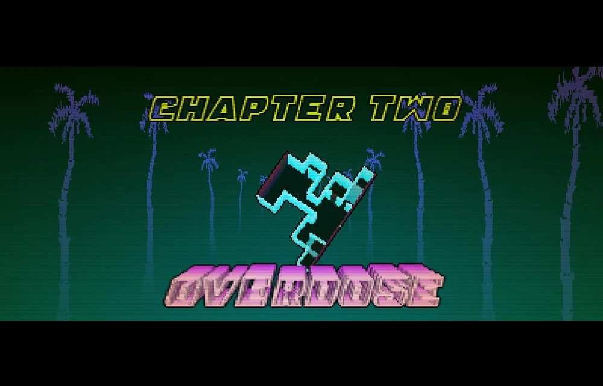
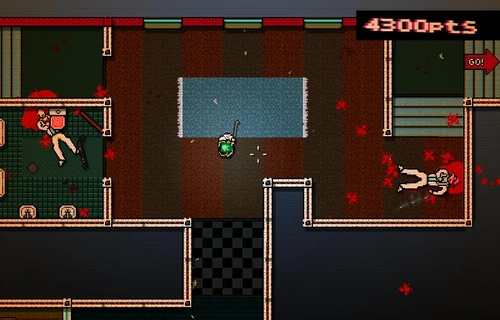
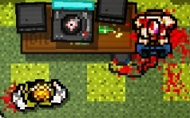

Obejetivo
Nesta fase, Jacket invade um local vigiado onde ele encontra um dos agentes da organização já morto e torturado.
- Dificuldade: Fácil
- Cuidado: O segundo andar tem janelas de vidro.
Galeria da Missão

